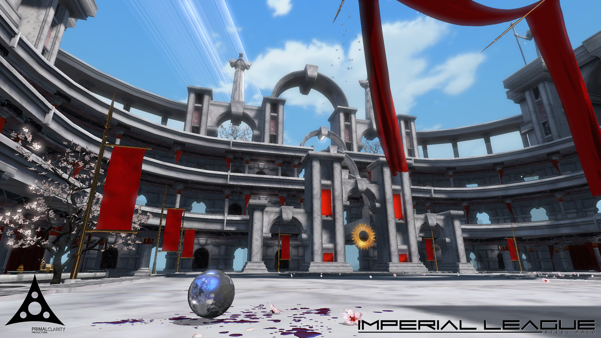

eGames 2009
Imperial League was shown at this years eGames, held recently in Melbourne. We'll report on the event shortly, as well as provide a link to the latest and greatest build of Imperial League that was prepared for our second Championship tournament, but for now, here's a few choice pieces to tide you over!
PCP at eGames 2009
Hi everyone!
We are pleased to announce that our Phase 4 entry of Imperial League into the Make Something Unreal contest is now available for download! You can download the 135mb installer here.
Not only that, we have also released a patch for this, which addresses a few sneaky bugs that crept in, so be sure to grab both downloads! The patch can be found here.
We are currently working on an even newer version, to be ready at the end of October for this years eGames Expo, being held here in Melbourne, Australia. PCP attended the event last year, and had a great time hosting the first ever Imperial League competition, which was open to anyone with enough courage to try it out. The event was won by Sam and Jake, who have been helping us ever since with testing of our on-going work on Imperial League. Sam and Jake will be attempting to defend their title this year, so if you are going to be at the event, come and visit us and see if you can take them on - you may even win some cool prizes!
The new build will feature improved player animations, at least 2 new levels, and the first ever appearance of the Huristar - the legendary Holy Guard of the Emperor, who play the sport of Steel Halo for the glory of the Empire. Our modeler has been hard at work putting together our iconic player, and we anticipate the Huristar will look every bit as good as the rest of Imperial League.
The future of Imperial League is looking bright - we are hoping to make some new friends at this years eGames tournament, and we're also hoping to have a split screen version of Imperial League working on the Playstation 3 by the end of the year. 2010 will be the year many of our plans and dreams for Imperial League will come to fruition - and we hope you will join us in the marble stadiums of Urivon for the most intense first person sport experience you will ever have!
Damian Scott
Design Lead
PCP
